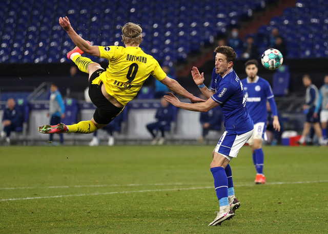
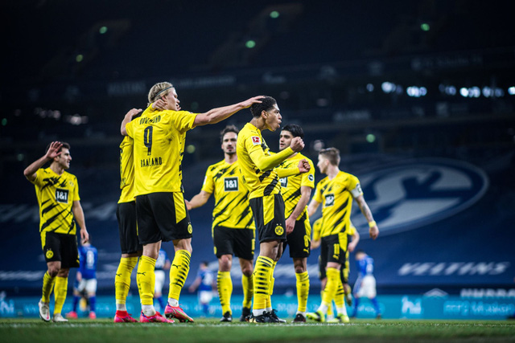

Trang chủ
Giới thiệu
Tin tức
Đăng ký
Đăng nhập
Góp ý
Liên hệ
Schalke 0-4 Dortmund: Erling Haaland tiếp tục đặt dấu ấn
Schalke 04 thi đấu khá cân bằng với Dortmund ở phần đầu trận đấu. Bước ngoặt của hiệp 1 đến ở phút 42, khi Benjamin Stambouli bên phía đội chủ nhà để mất bóng và chỉ vài giây sau, Jadon Sancho đã có cú dứt điểm hiểm hóc mở tỉ số cho Dortmund. Sau đó 3 phút, tới lượt Erling Haaland nhân đôi cách biệt cho đội khách với bàn thắng đẹp mắt. Tiền đạo người Na Uy đã có cú volley ở tư thế khó, giúp Dortmund kết thúc hiệp 1 với khoảng cách dẫn trước 2 bàn.  Thế trận trong hiệp 2 nghiêng hoàn toàn về phía đội khách. Phút 60, Raphael Guereiro nâng tỉ số lên 3-0 cho Dortmund sau 1 pha phối hợp bài bản. Sau đó 19 phút, Erling Haaland hoàn tất cú đúp cho riêng mình khi dứt điểm ở cự ly gần. Đây đã là bàn thắng thứ 4 của tiền đạo này chỉ trong 2 trận gần nhất.
 90 phút của trận derby vùng Rhur khép lại với chiến thắng 4-0 cho Dortmund. Kết quả này khiến đội chủ sân Veltins Arena tiếp tục xếp cuối bảng sau vòng 22 với chỉ 9 điểm có được.
Danh mục tin tức
Bóng đá Việt Nam
Bóng đá quốc tế
Quần vợt
Các môn khác
Bên lề